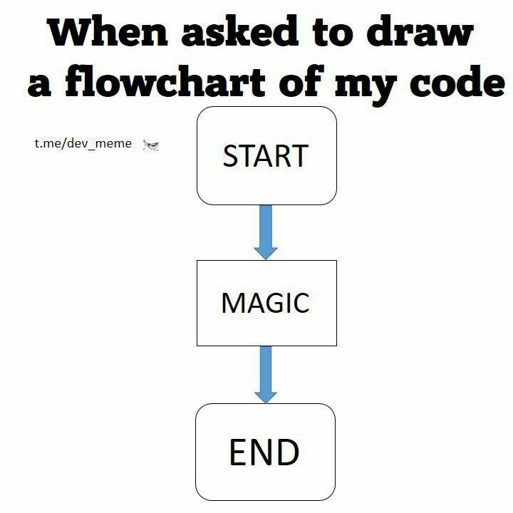

Génie logiciel

description
Le génie logiciel, l'ingénierie logicielle ou l'ingénierie du logiciel (en anglais : software engineering) est une science de génie industriel qui étudie les méthodes de travail et les bonnes pratiques des ingénieurs qui développent des logiciels. Le génie logiciel s'intéresse en particulier aux procédures systématiques qui permettent d'arriver à ce que des logiciels de grande taille correspondent aux attentes du client, soient fiables, aient un coût d'entretien réduit et de bonnes performances tout en respectant les délais et les coûts de construction.
Selon l'arrêté ministériel du 30 décembre 1983 relatif à l'enrichissement du vocabulaire de l'informatique [Journal officiel du 19 février 1984], le génie logiciel est « l'ensemble des activités de conception et de mise en œuvre des produits et des procédures tendant à rationaliser la production du logiciel et son suivi ».
